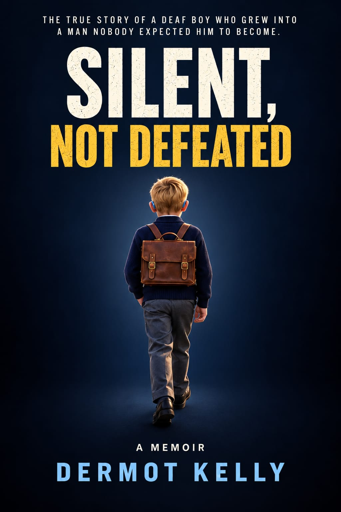

A Memoir
Silent,
Not Defeated
The true story of a Deaf boy who grew into a man nobody expected him to become.
Buy on Amazon
Hardback and paperback. Opens Amazon in a new tab.
Signed copy from Dermot
€XX + P&P. Signed paperback, posted by the author.

Published independently, Ireland
About the book
SILENT, NOT DEFEATED is the true story of Dermot Kelly, a Deaf boy growing up in Ireland during a time when sign language was discouraged and support for Deaf children was limited. From family life and boarding school to work, sport, fatherhood and loss, Dermot shares the challenges he faced, the people who shaped him and the determination that carried him forward.
Honest, moving and sometimes humorous, this is a story of finding belonging, overcoming expectations and refusing to be defeated.
“I was told I was stupid. I chose to prove them wrong.”